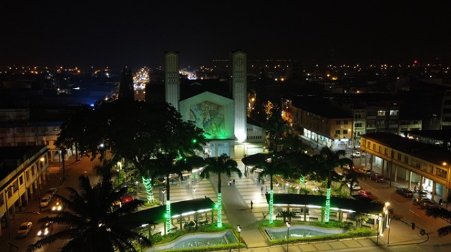
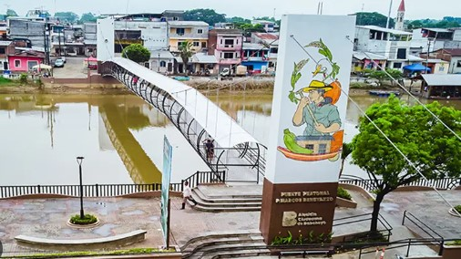
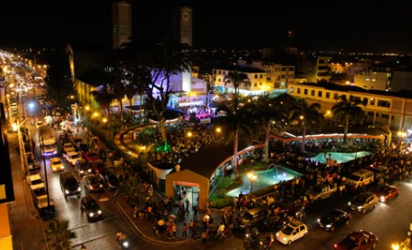

|

Babahoyo se encuentra rodeada por ríos que cruzan la ciudad, lo que la convierte en un destino ideal para disfrutar de |
|

La ciudad conserva viva su identidad montuvia. Desde las festividades locales hasta la forma de vida de sus habitantes, |
|

La gastronomía de Babahoyo es una delicia para el paladar. Platos como el seco de pollo, caldo de manguera |